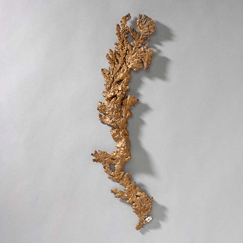

Copper - Cu
Native Elements


Habit: Light rose, tarnishes to copper-red or red-brown. Cubic and dodecahedral crystals common, or often flattened or elongated in twisted, wire-like shapes; filiform, tree-like (Arborescent), massive and as a coarse powder. Metallic Luster; opaque.
Environment: Native copper is almost always a secondary mineral, formed by the reduction of copper bearing solutions by iron minerals. In Michigan, USA copper is found as a primary ore, where million of tonnes have been mined.
Etymology: Copper is from the Latin aes Cyprium, meaning 'metal of Cyprus' from which island the metal was early produced.